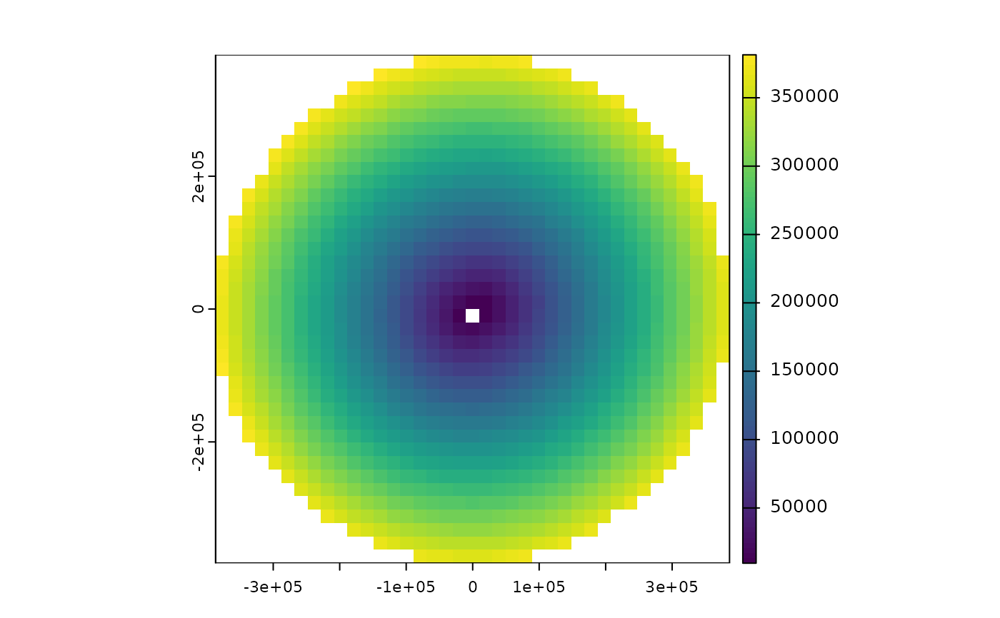

Get distance to shore for a spatial grid
get_dist_shore.RdCalculates distance from shore for each grid cell in the provided spatial grid. Spatial grid can be terra::rast() or sf format. The Natural Earth high resolution land polygons are used as the coastline and are downloaded from the Natural Earth website (https://www.naturalearthdata.com/downloads/10m-physical-vectors/), so an internet connection is required.
Arguments
- spatial_grid
sforterra::rast()grid, e.g. created usingget_grid().- inverse
logicalset toTRUEto get the inverse of distance to shore, i.e. highest values become lowest and vice versa. This is useful for use in spatial prioritization as a proxy for fishing activity, where the further a grid cell is from the shore, the less fishing activity there might be. Default isFALSEand returns distance from shore.
Value
a terra::rast or sf object (same type as spatial_grid input) with distance to shore for each grid cell.
Examples
# Get EEZ data first
bermuda_eez <- get_boundary(name = "Bermuda")
# Get a raster spatial grid for Bermuda
bermuda_grid <- get_grid(boundary = bermuda_eez, crs = '+proj=laea +lon_0=-64.8108333 +lat_0=32.3571917 +datum=WGS84 +units=m +no_defs', resolution = 20000)
dist_from_shore_rast <- get_dist_shore(bermuda_grid)
terra::plot(dist_from_shore_rast)
